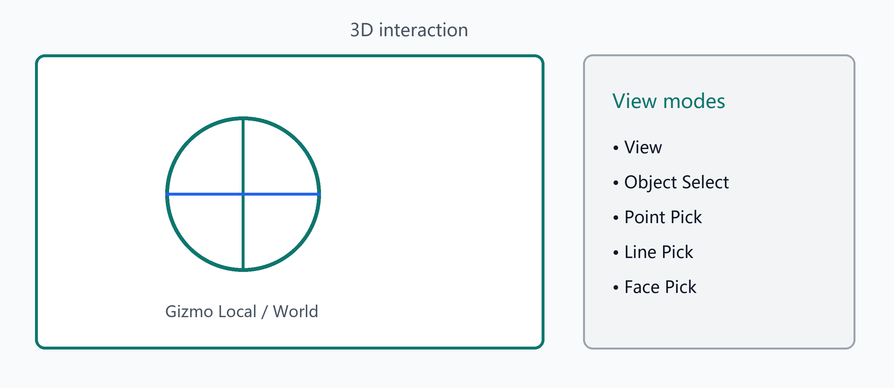

三维交互与拾取模式
三维视图与拾取
交互模式（视图菜单）
| 模式 | 用途 |
|---|
| 视图模式 | 旋转/平移/缩放浏览场景 |
| 对象选择 | 选中后端对象，显示变换 Gizmo |
| 点选模式 | 在几何上拾取点 |
| 线选择模式 | 拾取网格边/线 |
| 面选择模式 | 拾取网格面 |
变换 Gizmo
- 变换：物体系 — 沿对象局部轴
- 变换：世界系 — 沿世界坐标轴
- 典型操作：拖动平移；旋转手柄调整姿态（以当前 Gizmo 实现为准）
松手提交后，属性面板中的位姿会与场景同步。
布局
- 重置布局：恢复默认 Dock 排布
- 左侧面板 / 右侧面板：显示或隐藏侧栏